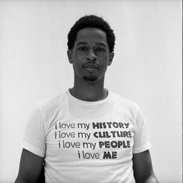
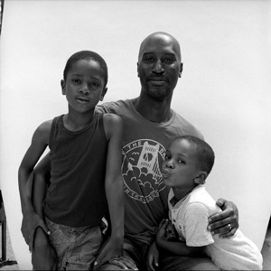

past exhibition |
|||
"I Too...Someday"Photography by Laurent Chevalier October 13th - October 22nd |
|||
|  |  | ||
|
In this collection of photos, photographer Laurent Chevalier combines two approaches to the exploration of being Black in America. The first approach is in the form of a collection of portraits taken of Black Men covering various ages, occupations, and visual descriptions. Each subject represents an individual who identifies with, and is identified as a black man, and the simplicity of the images themselves is meant to guide the viewer to examine their perspective on the subject. In aggregate, the photos of this myriad of different black men offers to opportunity to control the narrative of the Black Man's image in America. The second approach to the exploration of being black in America is represented in one individual photo. This piece contemplates the modern psychological weight of what it is to hear the constant news of Black death, particularly at the hands of law enforcement. Washington State born and Brooklyn stamped, Laurent Chevalier's eye is always searching for the natural beauty surrounding him. A proponent of shooting film, Chevalier strives to create an honest perspective on a space in time through social documentary photography and portraiture. Photos presented in the gallery at the Wild Project are from a larger project created with Cyrus Aaron and DeShaun Wright named "I, Too". Laurent's work in this project explores the implications and understandings of the image of Black Men. Laurent will also be sharing a new photographic piece created in collaboration with artist Dominque Jeanelle and inspired by the subject matter of Cyrus Aaron's "Someday" (theatrical production presented in the theater at the Wild Project October 13th-16th). |
|||
exhibition archive |
|||
| 2016 | 2015 | 2014 | 2013 |
| 2011 | 2010 | 2009 | 2008 |